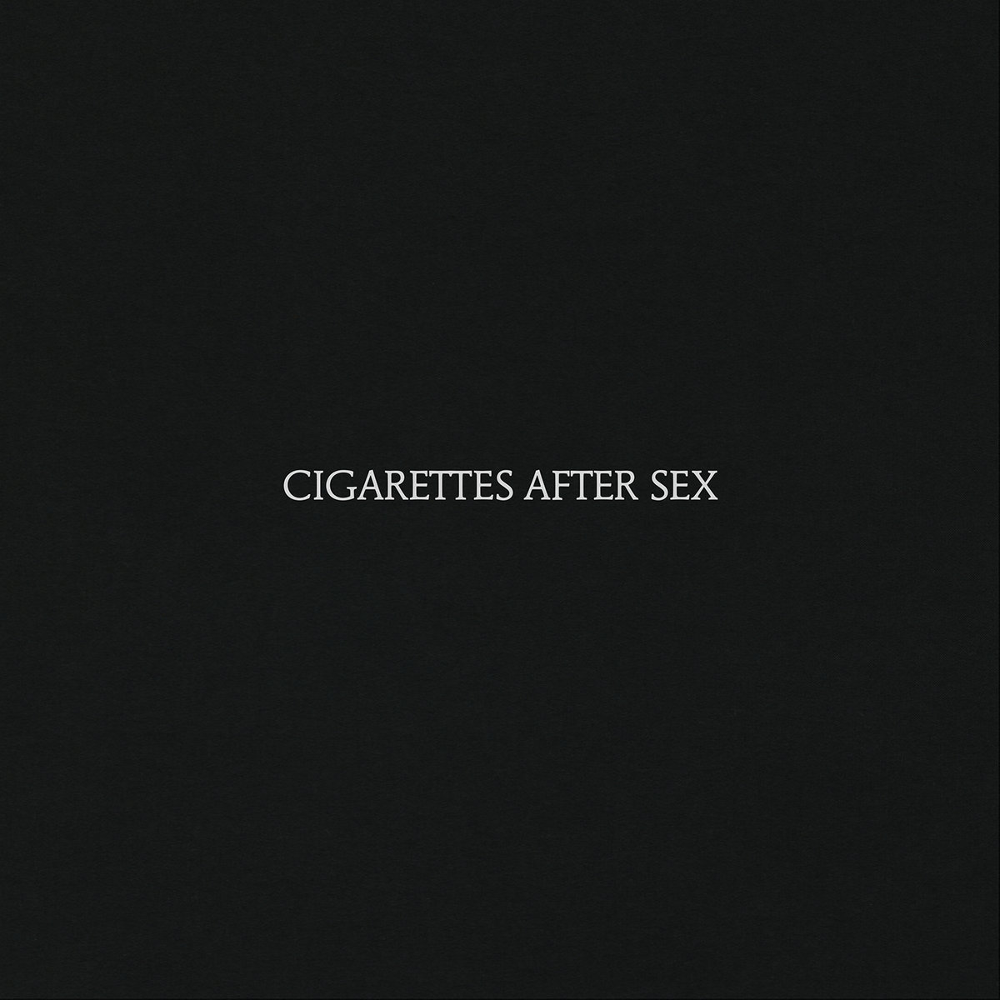
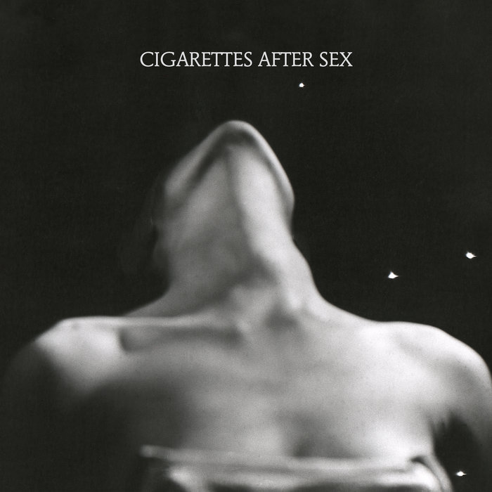

Cigarettes After Sex (2017)
The band's self-titled debut album is often considered their best work. It features a dreamy, atmospheric sound with soft vocals and introspective lyrics. Tracks like "Apocalypse" and "K." became iconic for their soothing, melancholic vibe.

Cry (2019)
Their sophomore album continues the ethereal, ambient style but with a more refined production. Songs like "Heavenly" and "Falling in Love" highlight the band's ability to evoke deep emotions through minimalistic arrangements and heartfelt lyrics.

I. (2012)
This debut EP, while not a full album, is essential in understanding the band's early sound. It includes standout tracks like "Nothing's Gonna Hurt You Baby" that laid the groundwork for their signature style of soft, romantic, and nostalgic music.